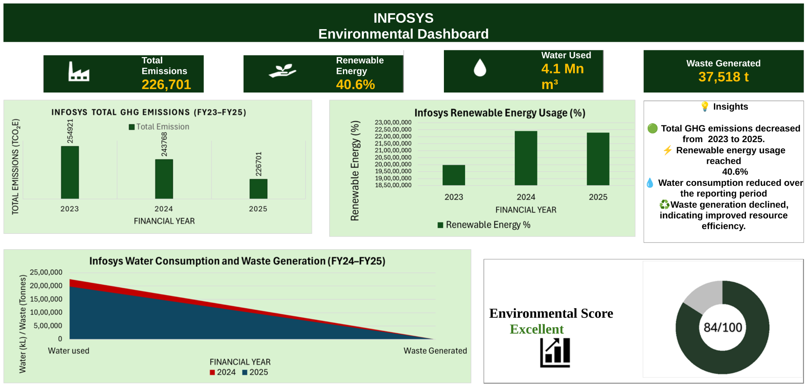

Infosys ESG Performance Dashboard
GHG | Renewable Energy | Water | Waste
01 — Objective
Analyse selected environmental performance indicators disclosed by Infosys and present multi-year ESG trends through a clear dashboard.
02 — Data Sources
Publicly available Infosys sustainability/ESG disclosures for FY2023–FY2025. The analysis is independent and does not represent an official company assessment.
03 — Key FY25 Indicators
Values shown are from the existing independent analysis of publicly disclosed information.
04 — Dashboard

05 — Improvements for Portfolio Version
Renewable-energy share should be shown with a clear % scale.
Water and waste should use separate visuals because their units differ.
Do not show the previous 84/100 environmental score without a documented scoring method.
Add report names/pages or source links for major KPIs.
06 — Files & Evidence
Current Dashboard
Image version of the existing Infosys environmental dashboard.
Open image →Workbook
Link your final cleaned/calculated workbook here.
07 — Disclaimer
This analysis uses publicly disclosed information for educational and professional development. It does not represent an official assessment or assurance of Infosys.